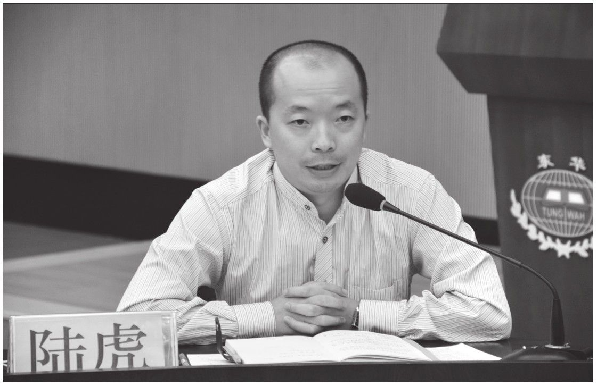

美国学者乔恩·R.卡曾巴赫说：“团队就是由少数技能互补、愿意为了共同的目的、业绩目标和方法而相互承担责任的人们组成的群体。”教师团队就是以教书育人为共同的愿景目标，为完成某些具体教学目标而明确分工协作，相互承担责任的知识、技能互补的个体所组成的团队。
教师团队有其特殊性。他们都是知识分子，他们都是拥有师道尊严的文人，他们有自己的专业特长和学科教学任务的特殊性，他们更有自己独特的性格与人格特征。如何将这样一支队伍凝聚成战斗力强的团队，使其育人效益最大化、教学业绩最优化？这是摆在学校管理者、级组管理者面前最重要的问题。
日本管理学大师稻盛和夫曾说，领导者必须明白“与制度相比，更重视人心”“与物质激励相比，更重视精神奖励”“与股东利益相比，更重视员工利益”“与才能相比，更重视人的品行”。因此，我认为，得到老师们的认可与支持是级组管理的首要任务，同时尊重与激励老师们是做好工作的基本前提，聚人、聚心、聚力，方能持续发展。
团队管理如何才能做到以上两点呢？我认为，需要在以下四个方面多下功夫：
第一，率先垂范成就一个自觉的团队。
彼得·德鲁克在《卓有成效的管理者》中指出，在所有的知识组织中，每一位知识工作者其实都是管理者——即使他没有所谓的职权，只要他能为组织做出突出的贡献就行。我在做级组长时给自己定下了一个管理的基本原则，“不好为人师，不改变他人，做最好的自己，做正能量源”。谈班主任工作，我自己也是班主任，我怎么做大家怎么做；谈教学成绩，我自己所带班级的教学成绩一直处于领先；谈劳动纪律，我比部分早读老师到得还早，离开办公室比部分晚修值日老师还晚；谈教研水平，各级教研活动积极参加，论文有发表、课题有立项。从教学到教研，从日常工作细节到劳动纪律，从班主任工作到级组管理，我明白：做最好的自己就是最有效的管理。级组长得首先做好自己，才能引领他人。
第二，良好的氛围成就一个快乐的团队。
被称为“东方德鲁克”的管理大师畠山芳雄曾说，总是站在对方的立场考虑问题的态度和让周围人感到快乐的态度是至关重要的。作为级组管理者，我从不为难任何一位老师，而且处处为老师着想。排课表时，老师们普遍比较排斥早上第一节和下午第一节，我将我的课全部排在了早上第一节和下午第一节，同时尽量考虑到早读老师的用餐问题、哺乳期女老师的育儿问题、有小孩儿上学老师的孩子接送问题等，在他们向我提出困难之前先将他们的困难考虑到，让老师觉得你一直在为他/她着想。一个互相支持、彼此理解、快乐轻松、同舟共济的团队，必然是一个富有战斗力的团队。
第三，目标引领成就一个进取的团队。
管理实践派专家张从忠教授认为，优秀的团队中一定要创造一种“胡萝卜文化”，即赞赏和激励。其实，作为级组管理人员，手头经费之拮据，那是谁做谁知道的，如果“胡萝卜文化”全靠奖励“胡萝卜”来解决，不仅是“胡萝卜”不够，而且效果也不佳。激励包括引导激励、情感激励、目标激励。爱因斯坦说，在一个崇高的目的支持下，不停地工作，即使慢，也一定会获得成功。一个级组，一定要有一个高大的目标来引领，这个目标再细化成备课组目标、班级目标、教师目标、学生目标等。在目标的指引与激励之下，大家为了共同的目标而为之拼搏，这也是一种“胡萝卜文化”的激励。
第四，尊重与规则成就一个规范的团队。
我的老师曾对我说，团队建设要“起于尊重，终于规则”。懂得尊重团队里的每一个人，懂得运用制度作为团队管理的资源和利器，向高手学习、向能者致敬！我经常和老师们交流的一句话是：“我是一个好人，但我绝对不是一个老好人！”我尊重每一位老师的历史、业绩、说话风格、处事方式、为人习惯，我和每一位团队成员都是朋友，都可以谈心，都可以畅饮。但如果是违背劳动纪律、违反学校规定、降低工作质量的事情，我也绝不会因为平时是朋友而降低要求和标准。工作和生活分开，制度与人文共存，和谐与竞争同在，团队与个人相得益彰，共同进步。
一个人若想成功，要么组建一个团队，要么加入一个团队。一个人是谁并不重要，重要的是他身后站着一群怎样的人。正如曾国藩所说：“轻财足以聚人，律己足以服人，量宽足以得人，身先足以率人。”

作者做管理经验分享